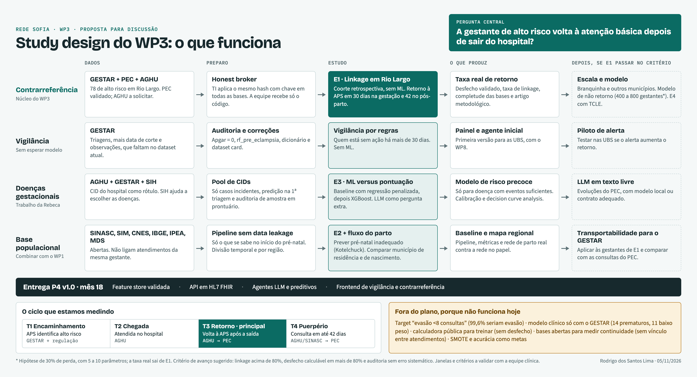

Study design do WP3
Recomendo trocar o artigo único por três estudos em sequência, com a contrarreferência como desfecho central e sem prometer modelo antes de medir o desfecho. Um estudo prospectivo com TCLE entra depois.
O motivo é o que os dados mostram: hoje o GESTAR não mede evasão nem contrarreferência, e nenhum desfecho clínico tem eventos suficientes para treinar modelo. Além desses quatro, a seção 7 lista todas as outras frentes que podemos explorar, cada uma com dados, acesso e parecer.
O design em uma imagem
As quatro trilhas que funcionam, dos dados até a entrega do mês 18. Abrir a imagem em tamanho original.

O que o SOFIA pede do WP3
A Rede SOFIA propõe uma infraestrutura federada de dados e IA para saúde materno-infantil, para atacar “a fragmentação e o subaproveitamento dos dados clínicos, epidemiológicos e socioeconômicos”. São oito WPs, seis datasets (D1 a D6) e 24 meses. O WP3 reúne séries temporais e registros estruturados do NTS-AL e da SESAU, com interoperabilidade com e-SUS, RNDS e AGHU.
Isso responde à dúvida da reunião sobre o foco do projeto
A proposta da Etapa 1 que deu origem à frente de Alagoas é a 15545, “Telessaúde Alagoas Inteligente: Sistema Inteligente de Contrarreferência para Gestantes de Risco Integrado à RNDS”. A minuta atribui ao NTS-AL “monitorar a contrarreferência de gestantes de risco” e pede ao WP3 agentes “para vigilância e contrarreferência”. O foco não está em aberto: é a contrarreferência.
Como os estudos cobrem a entrega do WP3
A entrega P4 sai em versões trimestrais, com a versão final (P4 v1.0) no mês 18. Ela tem quatro itens.
| Item do P4 v1.0 | O que entrega | Situação com esta proposta |
|---|---|---|
| Feature store validada | D1 e D2 da seção 7, alimentadas por E1 | Viável. Depende do acesso a PEC e AGHU. |
| API em HL7 FHIR | D2 e D3, junto com o WP6 | Viável. RNDS já em homologação. |
| Agentes LLM e preditivos operacionais | D7 (RAG), A6 (vigilância por regras) e modelo só se E1 der volume | Ponto de atenção: pode não haver modelo validado de não retorno até o mês 18. Alinhar com a coordenação o que conta como agente preditivo operacional. |
| Frontend de vigilância e contrarreferência | A6 + WP8 | Viável, usando as regras de A6 antes do modelo. |
Quem mais está envolvido
| Parte | Papel na minuta | Consequência para o WP3 |
|---|---|---|
| WP1 / D1 (UFRN e UFC) | Consolida SISPRENATAL, SINAN, SINASC e SIM com IBGE e CADU; pipelines ETL, camadas silver e gold, indicadores territoriais | A exploração de bases públicas decidida em 29/10 pode duplicar o trabalho do WP1. Conversar com eles antes de baixar qualquer coisa e pedir o que já existe. |
| WP2 (UFRJ) | Gestantes transplantadas, adesão terapêutica | Alinhar definições de adesão; o dataset é muito específico. |
| WP6, WP7, WP8 | Acesso federado, agentes, frontend | Regra do kickoff: o WP3 só fecha quando os dados circulam por eles. |
| Agentes LLM | Previstos “apenas nos WPs 1 e 3”, com RAG | LLM é compromisso do projeto, então a RQ da reunião tem lugar garantido. |
| Outras propostas do cluster | 15579 PLADIS (pré-natal no Nordeste), 15665 (transmissão vertical com RAG), 15611 GESTPLANTE, NEUROSUS | PLADIS e 15665 têm sobreposição de tema. Vale saber o que já produziram. |
| SESAU, HU/UFAL (RUTE), Fiocruz, Unicamp/CAISM, UFPI | Colaboração, não são partícipes formais | Uso de dados deles exige autorização ou instrumento próprio (seção 8). Fiocruz é uma ponte possível para o CIDACS. |
O que já foi feito e como aproveitar
| Trabalho | O que deixou | Como entra aqui |
|---|---|---|
| Kickoff WP3 (Sprint 1) | Missão: integrar, padronizar, estruturar, ativar. Riscos já previam dados insuficientes e atraso ético | Mantido como referência. Os riscos previstos se confirmaram. |
| Revisão de artigos e deck de study design (08/10) | Comparativo de cinco artigos e pipeline proposto | Mantida a lógica de transições. SMOTE, acurácia e 10-fold saem (seção 9), e há números a corrigir. |
| Planilha de features | 95 features, 81 no GESTAR (85,3%), 14 lacunas com fonte sugerida | Base do mapeamento em AGHU e PEC. “Presente” ainda não mede preenchimento (RQ3 de E1). |
| Auditoria exploratória (slides da Lara) | Target sem validade, censura (787 de 1.011 ativas com última triagem até 27 semanas), 20 divergências de pregnancy_id, 61 pré-cadastros com placeholder | Foi o trabalho que mudou o rumo. Vira a base de D1, somada aos dois erros novos da seção 3. |
| Matriz de revisão da literatura (Lara) | Ramos, Mlandu e Noor extraídos em detalhe, com dicionário de variáveis | Fonte das variáveis do SINASC para E2. Corrige dados do deck. |
| Dicionário e dataset anonimizado | 188 variáveis em 4 arquivos | Útil para exploração. Faltam a data de corte e as observações, e o README precisa de ajustes. |
| Rascunho do artigo de evasão | Estrutura LaTeX com dados mocados | Pausado. A estrutura pode ser reaproveitada; números e target, não. |
| Integrações PEC e RNDS (26/10) | PEC de Rio Largo validado, Branquinha a testar; RNDS homologada | Viabilizam E1 e D3. |
| Conectores e indicadores do projeto de UBS (21/10 e 04/11) | Conectores de IBGE e IPEA, tipologia rural/urbana, eixos de acesso | Podem servir a C5, se o outro projeto permitir o reúso (confirmar). |
O que a literatura do acervo sugere
| Trabalho | Dados e desfecho | Lição para nós |
|---|---|---|
| Ramos et al., 2025 | 8,8 milhões de nascimentos, SINASC + SIM + CNES, óbito neonatal evitável | Mostra que é possível vincular SIM e SINASC por NUMERODN, e traz avaliação de equidade. Modelo para C2. |
| Mlandu et al., 2023 | 21.641 mulheres, DHS de 3 países, dropout por etapa | Modelar por transição. Dados de inquérito, e a etapa pós-natal é a mais frágil. |
| Noor et al., 2026 | 5.128 mulheres, DHS de Bangladesh, continuum completo | Definição composta de continuum (A4). Reporta calibração. |
| Yoseph et al., 2026 | 3.855 gestantes, coorte com prontuários, <8 consultas | Relacionar perda de seguimento a desfecho (A11). Tem o seguimento completo que nos falta. |
| Dalal 2022; Khetan 2026 | Qualitativo e revisão de escopo sobre encaminhamento | Encaminhar não garante comparecer, e o agente comunitário é decisivo. Base para A3 e A8. |
| Learning to Call; Bayesian Bandits | Ensaios de chamadas a gestantes | Otimizar a busca ativa quando já houver predição (A9). |
| Preterm Birth: Stable Rules | Regras interpretáveis para prematuridade | Caminho para um escore simples no lugar de um modelo opaco (B2). |
| Balanceamento em prematuridade (PLOS ONE, 2025) | SMOTE, ADASYN e subamostragem no SUS | Ler junto com van den Goorbergh antes de decidir sobre reamostragem. |
Li a matriz e os decks por inteiro, mas não reli cada PDF do acervo; as linhas de Learning to Call, Stable Rules e Balanceamento se apoiam na descrição de bibliografia_recomendada.md.
O que os dados sustentam hoje
Analisei os quatro arquivos do dataset anonimizado: 1.113 gestantes, 1.859 triagens e 188 partos. Alguns resultados mudam o desenho, e dois deles são defeitos da nossa própria base.
| Achado | Número | Consequência para o desenho |
|---|---|---|
| Target “evasão <8 consultas” | 1.109 de 1.113 (99,6%) são evasão; <6 consultas: 1.087 (97,7%) | Sem variação, não há o que prever (a auditoria da Lara já apontou isso). Target descartado, e os resultados do artigo não têm base (a reunião de 22/10 já os registrou como dados mocados). |
| O que é uma “consulta” | 100% das 1.859 linhas têm tipo_atendimento = TRIAGEM; 64,2% das gestantes têm 0 ou 1 registro | O GESTAR conta triagens, não pré-natal. Contar consultas de verdade exige o PEC. |
| Seguimento censurado | Idade gestacional mediana na última triagem: 14 semanas; 855 de 1.091 abaixo de 27 semanas | Qualquer target binário fechado confunde “ainda grávida” com “perdida”. Precisa de análise de tempo até o evento. |
| Eventos adversos | Prematuro 14, baixo peso 11, UTI neonatal 7, óbito neonatal 1, óbito materno 1 | Muito abaixo do mínimo para qualquer modelo (tabela de tamanho amostral abaixo). |
| Apgar 5 min = 0 erro na base | 27 de 188; 26 deles sem óbito registrado | Provável campo vazio gravado como 0. A “asfixia” cai de 34 para 7 sem esses casos. Corrigir no dataset. |
rf_pre_eclampsia erro na base | 110 gestantes, das quais 70 só pelo risco da calculadora Barcelona; diagnóstico HG/PE: 40 | A coluna mistura risco com doença, erro da nossa geração do dataset. Não usar como rótulo. |
| Doença incidente | HG/PE: 9 surgem após a 1ª triagem; diabetes: 14 de 70 | Os demais casos já estavam marcados na 1ª triagem. Prever esses casos seria data leakage, e os incidentes são poucos demais. |
| Calculadora Barcelona | Baseline: 605 não avaliadas (54%), 364 ausente, 110 baixo, 34 alto | Guardamos só o resultado, não as entradas. Comparação possível só no subgrupo avaliado. |
| Atraso de retorno | dias_atraso_retorno_agendado preenchido em 9 de 1.859 linhas | A feature “velocidade de adesão” do deck de outubro não existe na prática. |
A reunião citou ~1.184 gestantes e 27 desfechos; a diferença para 1.113 e 188 ainda precisa ser conciliada. O número 27 coincide com os 27 casos de Apgar = 0, mas não confirmei relação.
A falta de desfecho não é aleatória: varia por município. Comparar desfechos entre municípios mediria a prática de registro, não risco.
Quantos dados cada modelo exigiria
| Desfecho (prevalência) | Parâmetros | N mínimo | Eventos mínimos | Eventos hoje |
|---|---|---|---|---|
| Parto prematuro (7,4%, entre partos) | 10 / 20 | 1.408 / 2.816 | 105 / 210 | 14 |
| Baixo peso (5,9%, entre partos) | 10 / 20 | 1.618 / 3.236 | 95 / 190 | 11 |
| HG/pré-eclâmpsia (3,6%) | 10 / 20 | 2.203 / 4.406 | 80 / 159 | 40 (9 incidentes) |
| Perda na contrarreferência (30%, hipótese) | 5 / 10 / 20 | 400 / 800 / 1.600 | 120 / 240 / 480 | Não medido |
Critérios de Riley et al. (mesma lógica do pacote pmsampsize), com R² de Nagelkerke 0,15 e shrinkage 0,9. O R² e a taxa de 30% são suposições minhas; a taxa real é justamente o que E1 mede. Parâmetro não é o mesmo que variável: variáveis categóricas e termos não lineares consomem mais de um.
Isso confirma em números o que a reunião concluiu: esperar as gestantes atuais terminarem não resolve. Os 392 casos de alto risco do GESTAR dariam, no máximo, um modelo enxuto de cerca de 5 parâmetros para a contrarreferência, e só se todos os municípios fossem ligados ao PEC.
O desfecho central: contrarreferência computável
O objetivo reafirmado na reunião foi estimar a chance de a gestante se perder ao voltar para a atenção básica. A dúvida entre continuidade e desfecho clínico voltou porque esse objetivo nunca foi escrito como regra que um banco de dados consiga calcular. Proposta de definição, a validar com a equipe clínica:
- Evento índice
- Primeira saída do hospital de referência em cada gestação: alta de internação obstétrica ou último atendimento ambulatorial de alto risco (AGHU).
- Desfecho
- Primeiro contato assistencial qualificado na APS registrado no PEC: atendimento individual ou visita domiciliar. Janelas: 30 dias durante a gestação (coerente com a régua de 30 dias do GESTAR) e 42 dias após o parto (puerpério).
- Eventos competitivos
- Parto, perda gestacional, óbito e nova internação, contados separadamente e nunca como perda.
- Censura
- Mudança de município ou fim da extração de dados. Exige guardar a data de corte de cada fonte.
- Ponto de predição
- Na data do evento índice. Só entram preditores anteriores a ela.
As transições da jornada
A jornada segue a lógica de transições de Mlandu et al. (2023), e cada transição tem uma fonte diferente. Só um município com acesso às três fontes permite enxergar o ciclo completo.
Os quatro estudos recomendados
E1. Coorte de linkage em Rio Largo
Núcleo · fazer primeiroPor que Rio Largo: é o único município em que, segundo a reunião, temos PEC acessível (validado em 26/10) e referência para o próprio hospital (a confirmar no PDF de estratificação). A estimativa mencionada foi de 10 a 20 gestantes; o dataset tem 78 de alto risco, das quais 38 com 2 ou mais triagens e 24 com parto registrado. Branquinha é a extensão natural (42 de alto risco; acesso ao PEC ainda a testar).
- Perguntas
- RQ1Que fração das gestantes de alto risco do GESTAR é encontrada no PEC e no AGHU?
- RQ2Qual a incidência cumulativa de retorno à APS em 30 e 42 dias?
- RQ3Quais features da planilha estão de fato preenchidas em cada base?
- Desenho
- Coorte retrospectiva de linkage determinístico (CPF/CNS, com auditoria manual da amostra). Primeiro as 78; depois, a extensão.
- Análise
- Taxas de linkage com IC 95%, incidência cumulativa com competing risks (Aalen-Johansen), completude por variável. Sem ML: com esse n, nenhum modelo se sustenta.
- Produto
- O protocolo que o professor pediu (definir a metodologia mesmo com poucas gestantes), a taxa real que alimenta o cálculo amostral e um artigo metodológico. O modelo preditivo só vem depois, na escala que o resultado indicar.
- Critério de avanço
- Sugestão para discutir: linkage acima de 80%, desfecho calculável em mais de 80% dos ligados e auditoria sem erro sistemático.
- Riscos
- Atendimento fora do PEC parece perda (auditar amostra com a UBS). A RNDS pode não devolver tudo o que o banco do PEC tem, então a extensão pode exigir acesso via convênio. Acesso ao AGHU e base legal do vínculo seguem em aberto desde 22/10.
E2. Pré-natal inadequado em base populacional
SINASC + SIM · em paraleloResponde à ideia discutida de validar a metodologia em base pública. Limitação importante: o SINASC tem um registro por nascimento, sem histórico entre atendimentos. Ele não mede continuidade, como já se havia percebido na reunião. Serve para outra pergunta, útil por si só. Convém combinar com o WP1, que já tem essas bases no escopo.
- Pergunta
- Com o que se sabe no início do pré-natal, é possível prever quem terá pré-natal inadequado (índice de Kotelchuck) e desfecho neonatal adverso em Alagoas?
- Dados
- SINASC de Alagoas, várias coortes de nascimento (dezenas de milhares por ano; confirmar no TabNet). Óbito neonatal via SIM, ligado por
NUMERODNcomo em Ramos et al. (conferir se o campo vem nos arquivos abertos). Contexto municipal de IBGE, IPEA e MDS. - Cuidado principal
- Usar só preditores conhecidos no início: idade, escolaridade, raça/cor, paridade, perdas, município, mês de início. Número de consultas é data leakage e não pode entrar como preditor. Diferente da simples contagem de consultas, o Kotelchuck considera a duração da gestação.
- Validação
- Divisão temporal e por macrorregião. Depois, aplicar o modelo às gestantes de E1 usando só as variáveis comuns e comparar com as consultas reais do PEC.
- Limites
- Só nascidos vivos (viés de seleção). Um estudo em Campinas encontrou baixa confiabilidade no número de consultas. Ramos et al. (2025) já exploraram a base nacional, então a contribuição precisa ser o recorte regional, a predição no início do pré-natal e a transposição para o GESTAR.
- Vantagem
- Pode começar já e gera o pipeline, as métricas e o baseline. Dados públicos, provavelmente sem exigência de CEP (confirmar).
IBGE e IPEA entram como contexto do município ou território, não da pessoa. Bolsa Família individual só vem do cadastro do cidadão no PEC.
E3. Predição precoce de doenças gestacionais
Rebeca · depende do AGHU- Perguntas
- RQ1Modelos de ML superam a pontuação do GESTAR na predição precoce das doenças mais prevalentes em Alagoas?
- RQ2No subgrupo avaliado, como se comparam com o resultado da calculadora Barcelona?
- RQ3LLMs acrescentam algo aos modelos clássicos?
- Rótulo
- Pool de CIDs definido pela equipe clínica, vindo do AGHU e não dos checkboxes do GESTAR. CID não é obrigatório, então é preciso auditar uma amostra em prontuário.
- Base
- Avaliar a base anonimizada do AGHU citada em 22/10, com o GESTAR como validação externa. Selecionar doença com eventos suficientes usando a tabela de tamanho amostral. Base hospitalar concentra casos graves, e o modelo pode não se transferir para a APS.
- Regras
- Predição na 1ª triagem, só casos incidentes, sem usar exames posteriores ao ponto de predição.
Dois alertas sobre a premissa da reunião
“ML supera a calculadora” pode não se sustentar. A busca rápida que fiz encontrou comparações contra o modelo FMF (não contra Barcelona) em que ML empatou ou ficou abaixo (PREVAL, coorte asiática, coorte romena). Esses modelos usam marcadores como PlGF e Doppler, que não guardamos. Falta localizar o paper citado na reunião. Sem esses marcadores, o que estaríamos testando é outra coisa: predição só com variáveis clínicas, o que pode ser útil para a APS, mas não substitui Barcelona.
LLM em dado estruturado: a evidência encontrada favorece modelos clássicos, como o colega previu na reunião (há resultados contrários em estudos isolados). A pergunta mais promissora é usar LLM em texto livre (evoluções do PEC e observações do GESTAR) para extrair rótulos e variáveis ausentes. Isso exige modelo local ou contrato adequado: prontuário identificável não pode ir para API externa.
E4. Coorte prospectiva com TCLE
Depois de E1Recrutar no hospital de referência, com consentimento, e captar o que nenhuma base tem: localização precisa, zona rural, transporte, escolaridade, contato e confirmação ativa do retorno. É a resposta mais robusta para a contrarreferência e permite também oferecer o TCLE às gestantes já cadastradas.
É também a mais lenta e depende de CEP e fluxo assistencial. Como o AGHU é somente leitura, a coleta exige um instrumento próprio ou apoio do setor, e vale envolver cedo a gerência de Atenção à Saúde e a chefia da obstetrícia, como sugerido na reunião. E1 entrega o desfecho validado e a taxa necessária para calcular o n.
Bases abertas: o que cada uma permite
A resposta para a pergunta da reunião
Nenhuma base aberta encontrada liga os vários atendimentos da mesma gestante. Elas têm um registro por evento e não trazem identificador pessoal, então não medem contrarreferência. Medem território, nascimento, óbito, internação e agregados. A exceção é o vínculo SIM–SINASC pelo número da declaração de nascido vivo, usado por Ramos et al.
| Base | O que traz | Nível | Uso aqui | Verificação |
|---|---|---|---|---|
| SINASC | Nascimento, mãe, consultas, mês de início, Kotelchuck, parto, Apgar, peso | Por nascimento | C1, C2, C3, C4, B7 | Variáveis verificadas na matriz e na busca; Kotelchuck a validar no dicionário oficial |
| SIM | Óbitos, causa, óbito materno e infantil | Por óbito | C2 | Microdados em CSV confirmados na página do MS |
| SINAN | Agravos: sífilis em gestante, sífilis congênita, HIV, outros | Anonimizado, até município | B6 | Página do MS confirma abertura e nível municipal |
| SISPRENATAL | Acompanhamento de pré-natal | A conferir | Potencial para C1 | Não confirmei abertura. Citado na minuta para o WP1; perguntar a eles |
| SIH/SUS | Internações, CID, procedimentos, município | Por AIH, sem pessoa | C6 | Uso em morbidade materna confirmado (via PCDaS), com ressalva de validade |
| SIA/SUS | Produção ambulatorial | A conferir | Exames e alta complexidade | Não confirmei utilidade para gestantes |
| SISAB / e-Gestor | Atenção primária, indicadores de pré-natal | Agregado | C5 | Dados abertos sem cadastro confirmados. Indicadores podem estar sujeitos a manipulação (04/11) |
| SISVAN | Estado nutricional, ganho de peso gestacional | A conferir | Variáveis de contexto | Listado no OpenDataSUS |
| SI-PNI | Vacinação | Microdados por API desde 2020 | Cobertura vacinal de gestante | Conforme documentação do healthbR |
| CNES | Estabelecimentos e equipes | Aberto até município; UBS e equipe restrito (04/11) | C2, C3, C5 | Conforme reunião de 04/11 |
| IBGE | Censo 2022, malhas, tipologia rural/urbana, API | Município e setor | C5, zona rural | API atualizada conforme reunião de 21/10 |
| IPEA: IVS / Atlas | Vulnerabilidade social | Município; dado de 2017 | C5 | Plataforma com download confirmada. Não informa Bolsa Família individual |
| MDS: CadÚnico, Bolsa Família, BPC | Benefícios sociais | Agregado aberto | C5 | Conforme reunião de 21/10. Individual só via PEC |
| PNS / Nascer no Brasil | Inquéritos com pré-natal e parto | Amostra nacional | Referência externa | PNS lida pelo healthbR; Nascer no Brasil não confirmado |
| CIDACS (100 Milhões) | CadÚnico ligado a SINASC, SIM, SIH, SI-PNI | Individual, restrito | C7 | Conteúdo confirmado; forma de acesso, não |
| SPNeoDeath | SINASC + SIM, São Paulo, 2012–2018, 1,4 milhão | Por nascimento, CC BY | C8 | Artigo em Data in Brief confirmado |
Atalhos de acesso: OpenDataSUS (30 conjuntos), PCDaS/Fiocruz, TabNet, e os pacotes R microdatasus (usado por Ramos) e healthbR. Antes de baixar qualquer coisa, perguntar ao WP1 o que já está nas camadas silver e gold.
Dados dos hospitais: segundo a reunião, o que vai para as bases públicas sai do próprio hospital, que também pode fornecer esses dados. Isso ajuda a validar SINASC e SIH com a realidade do HU.
Todas as possibilidades
São 42 frentes. Estão aqui para que a decisão seja tomada com tudo à vista, não para que tudo seja feito. O parecer de cada uma é minha sugestão, a discutir. Filtre por parecer:
A. Contrarreferência e continuidade do cuidado
O objetivo central do WP3.
| # | Possibilidade e pergunta | Dados | Acesso | Parecer |
|---|---|---|---|---|
| A1 | Linkage em Rio Largo (E1) Que fração é encontrada nas bases? Quem volta à APS? | GESTAR, PEC, AGHU | CEP + autorização | Fazer agoraNúcleo da proposta. |
| A2 | Extensão para Branquinha e outros municípios O método funciona em outro lugar? | GESTAR, PEC de cada município | CEP + autorização | DepoisSó com A1 aprovado no critério de avanço. |
| A3 | Encaminhamento efetivo (T1) A gestante de alto risco chegou ao hospital? | GESTAR, AGHU, regulação (SISREG, a confirmar) | CEP + autorização | Fazer agoraMesma extração de A1. Dalal e Khetan mostram essa lacuna. |
| A4 | Puerpério e continuum completo Quem faz a consulta em até 42 dias? | AGHU ou SINASC, PEC | CEP + autorização | Fazer agoraDesfecho secundário de A1. Adapta o continuum de Noor ao SUS. |
| A5 | Modelo de risco de não retorno Dá para prever quem não volta? | Coorte com linkage | CEP + autorização | DepoisPrecisa de 400 a 800 gestantes (hipótese de 30%). |
| A6 | Vigilância por regras Quem está sem ação há mais de 30 dias? | GESTAR (data de corte e observações) | Já temos | Fazer agoraSem ML. Vira o agente e o painel iniciais do P4. |
| A7 | Coorte prospectiva com TCLE (E4) O que explica a perda, com dados que nenhuma base tem? | Coleta própria no hospital | TCLE | DepoisDepois de E1, que fornece desfecho e n. |
| A8 | Estudo qualitativo de barreiras Por que a gestante não volta? | Entrevistas com gestantes, ACS e enfermagem | TCLE | DepoisBarato e publicável. Explica o que os modelos não mostram. |
| A9 | Busca ativa otimizada Quem contatar, quando e como? | Alertas + registros de contato | TCLE | FuturoBandits exigem canal de contato e volume. |
| A10 | Piloto de alerta nas UBS O alerta aumenta o retorno? | Stepped wedge entre UBS, com WP8 | TCLE | FuturoÉ o teste real de impacto e fecha o ciclo do projeto. |
| A11 | Efeito causal da perda no desfecho Perder o seguimento piora o desfecho? | Coorte grande com linkage (target trial emulation) | CEP + autorização | FuturoExige volume e confundidores bem medidos. |
B. Predição clínica
Frente da Rebeca e dos agentes preditivos.
| # | Possibilidade e pergunta | Dados | Acesso | Parecer |
|---|---|---|---|---|
| B1 | ML versus pontuação do GESTAR (E3) O ML supera o escore de pontos atual? | AGHU, GESTAR | CEP + autorização | Em paraleloDepende do AGHU e do pool de CIDs. |
| B2 | Escore simplificado Quais dos 68 fatores de risco realmente importam? | GESTAR + rótulo do AGHU | CEP + autorização | DepoisUma regra simples pode valer mais que um modelo caixa-preta para a APS. |
| B3 | Só variáveis clínicas versus Barcelona Quanto se perde sem PlGF e Doppler? | Subgrupo avaliado (144 com resultado no baseline) | CEP + autorização | Em paraleloSubgrupo muito pequeno hoje. Dentro de E3. |
| B4 | Escalada de risco entre triagens Quem sobe para alto risco? | GESTAR: 76 de 268 elegíveis (28%) | Já temos | Em paraleloÉ hoje o único evento da série temporal com volume. Rótulo sujeito ao bug de automarcação de 21/10. Só exploratório. |
| B5 | Sinais de gravidade (MUSE) Os 8 parâmetros antecipam a deterioração? | Campos novos, opcionais, na triagem | Já temos | DepoisComeça a coletar agora; analisar quando houver dados. Confirmar a sigla e a lista de campos. |
| B6 | Transmissão vertical Quem tem risco de sífilis e HIV sem tratamento adequado? | GESTAR (VDRL reagente em 62), SINAN | CEP + autorização | Em paraleloCoordenar com a proposta 15665 do cluster. |
| B7 | Prematuridade e baixo peso Dá para prever no início do pré-natal? | SINASC | Aberto | Em paraleloHá literatura extensa. Bom para testar o pipeline. |
| B8 | Cesárea Quem terá cesárea? | GESTAR: 110 de 188; SINASC | Aberto | Não priorizarTem eventos, mas não se alinha ao objetivo do projeto. |
| B9 | Imagem de ultrassom O exame ajuda na predição? | Sem base disponível | Restrito | Não priorizarDescartado por ora na reunião. |
C. Base populacional e território
O que dá para fazer com bases abertas, combinado com o WP1.
| # | Possibilidade e pergunta | Dados | Acesso | Parecer |
|---|---|---|---|---|
| C1 | Pré-natal inadequado no início (E2) Quem terá pré-natal inadequado? | SINASC | Aberto | Fazer agoraSem CEP (confirmar). Gera o pipeline e o baseline. |
| C2 | Óbito neonatal evitável em Alagoas O modelo de Ramos se sustenta no estado? | SINASC, SIM, CNES | Aberto | Em paraleloReplicação regional com auditoria de equidade. |
| C3 | Fluxo do parto entre municípios As gestantes parem onde a referência manda? | SINASC: município de residência × nascimento e estabelecimento | Aberto | Fazer agoraÚnico proxy aberto de rede de referência. Barato e novo para Alagoas. |
| C4 | Impacto do GESTAR nos indicadores Municípios com GESTAR melhoraram? | SINASC + datas de implantação por município | Aberto | DepoisDifference-in-differences. Poucos municípios e pouco tempo por enquanto. |
| C5 | Mapa de vulnerabilidade e acesso Onde vulnerabilidade e pré-natal ruim coincidem? | SINASC, IVS, CadÚnico agregado, CNES, IBGE | Aberto | Em paraleloApoia a priorização. Dialoga com os indicadores territoriais do WP1. |
| C6 | Morbidade materna por CID em Alagoas Quais doenças são mais frequentes? | SIH/SUS | Aberto | Fazer agoraResposta rápida para o pool de CIDs da Rebeca. Apenas contagens; o SIH tem validade limitada para morbidade. |
| C7 | Dados vinculados do CIDACS Como a vulnerabilidade individual afeta o desfecho? | Coorte de 100 Milhões (CadÚnico + SINASC + SIM + SIH) | Restrito | FuturoMaior ganho social. Processo de acesso não confirmado; Fiocruz pode ajudar. |
| C8 | Benchmark em base pronta O pipeline roda bem? | SPNeoDeath (São Paulo) | Aberto | Não priorizarÚtil só se o SINASC atrasar. Não é contribuição científica. |
| C9 | Reutilizar dados de artigos estrangeiros Modelos de fora servem aqui? | DHS, bases dos artigos | Aberto | Não priorizarContexto diferente, como observado na reunião. |
| C10 | Calculadora pública Como é o perfil de quem faz autotriagem? | Triagens sem identificação | Já temos | Não priorizarSem desfecho, sem link, autorrelato. Apenas descritivo, após o lançamento. |
| C11 | Vida da mulher após a gestação Ela continua estudando e trabalhando? | Nenhuma base aberta individual identificada | Restrito | Não priorizarEstacionar. Só viável por vínculo tipo CIDACS. |
| C12 | Esperar o GESTAR amadurecer O volume resolve sozinho? | GESTAR em 5 a 6 meses | Já temos | Não priorizar~1.000 gestantes não bastam, e o registro de parto continua falho. |
D. Dados, interoperabilidade e IA
Exigidos pelo P4 ou publicáveis por conta própria.
| # | Possibilidade e pergunta | Dados | Acesso | Parecer |
|---|---|---|---|---|
| D1 | Auditoria de qualidade e dataset card Quão confiável é o GESTAR? | Auditoria da Lara + achados da seção 3 | Já temos | Fazer agoraCorrige Apgar e pré-eclâmpsia. Dataset card é entrega prevista. |
| D2 | Feature store e mapeamento FHIR Como unificar GESTAR, PEC e AGHU? | Planilha de features + ambiente de teste do AGHU | Já temos | Fazer agoraItem obrigatório do P4. |
| D3 | RNDS versus banco do PEC O que se perde usando a RNDS? | Homologação RNDS, PEC de Rio Largo | Já temos | Fazer agoraDecide se a escala depende de convênio. Estudo técnico publicável. |
| D4 | LLM para mapear esquema Um LLM acelera o mapeamento das 1.183 tabelas do PEC? | Só esquema, sem dado de paciente | Já temos | Em paraleloRQ atual, sem risco de privacidade. |
| D5 | LLM em texto livre Dá para extrair rótulos e variáveis ausentes? | Evoluções do PEC, observações do GESTAR | CEP + autorização | DepoisA aplicação mais promissora de LLM. Exige modelo local ou contrato adequado. |
| D6 | LLM versus ML clássico em dados tabulares O LLM agrega valor em dados estruturados? | Mesma base de E3 | CEP + autorização | Em paraleloRQ da reunião. A evidência favorece modelos clássicos. |
| D7 | RAG sobre protocolos O agente responde com base nas diretrizes? | Protocolos do MS e documento de estratificação | Aberto | Em paraleloCompromisso do P4 e sem dado de paciente, se bem delimitado. |
| D8 | XAI validada com clínicos A explicação ajuda quem decide? | Modelo + equipe do HU e das UBS, com WP8 | TCLE | DepoisPrecisa de modelo antes. |
| D9 | Federated learning Dá para treinar sem centralizar dados? | Municípios e WPs, com WP6 | Restrito | FuturoCoerente com a rede, mas só faz sentido com vários centros. |
| D10 | Comparação de métodos de linkage Hash exato ou linkage probabilístico tolerante a erros? | Amostra de A1 auditada | CEP + autorização | Em paraleloComplemento metodológico barato de A1. |
Como dividir na equipe agora
| Frente (29/10) | Possibilidades que assume |
|---|---|
| Tarcísio: Rio Largo | A1, A3, A4, com D3 |
| Yuki e Caio: AGHU | D2 e campos de A1 e B1 |
| Bases públicas | C1, C3, C6, depois de falar com o WP1 |
| Rebeca | C6 para escolher os CIDs, depois B1 e B3 |
| Lara | D1 |
| Rodrigo | D3, A6, este desenho |
Divisão sugerida a partir das tarefas de 29/10 e 22/10; a alocação é da equipe.
Gap de triagem medido para A6: 419 de 768 intervalos acima de 30 dias; 225 das 399 gestantes com 2+ triagens tiveram gap acima de 45 dias. A6 mede ação no sistema, não cuidado, e precisa da data de corte e das observações, que estão fora do dataset anonimizado.
Linkage, privacidade e CEP
Na reunião, surgiu a objeção: ao sair do hospital, perde-se o vínculo; e, se conseguirmos vincular, é porque a anonimização foi feita errado. As duas questões se resolvem separando quem liga de quem analisa.
- A mesma pessoa recebe o mesmo código em GESTAR, PEC e AGHU, o que um hash separado por instituição não permitiria.
- O GESTAR já tem
cpf_hash, o que pode facilitar, mas é preciso conferir se o método serve para o cruzamento. - Isso é pseudonimização, não anonimização: pela LGPD ainda são dados pessoais. O protocolo deve dizer isso e não repetir o “irreversível” e o “100%” do README atual. Município com poucos casos, somado a intervalos exatos, ainda permite reidentificar; adotar um tamanho mínimo de célula ao publicar.
Proposta para o CEP: manter a submissão do GESTAR, que já está pronta, e tratar o resto como um protocolo guarda-chuva único de linkage retrospectivo (E1 e E3), com instituições coparticipantes e pedido justificado de dispensa de TCLE. O E4 entra como emenda ou protocolo próprio. Isso responde ao receio de abrir vários CEPs, mas é preciso confirmar com o comitê a instância competente, se o CEP do GESTAR já cobre o cruzamento e a base legal do vínculo com o AGHU. Também precisamos do termo de cooperação com a Secretaria, já citado em 26/10.
Atenção ao instrumento jurídico: a minuta diz que a UFRN é a executora formal e que SESAU, HU e outras colaboradoras não são partícipes. Qualquer uso de dados dessas instituições “dependerá de autorização própria, instrumento específico ou aprovação institucional”. O mesmo vale para o PEC dos municípios. Isso precisa entrar no plano antes do CEP.
Regras comuns de método
Estas regras substituem pontos do deck de outubro (Estudo_Design_Artigos_WP3_SOFIA).
| Deck de outubro | Proposta | Motivo |
|---|---|---|
| SMOTE no pré-processamento | Sem reamostragem; ajustar o limiar | SMOTE piora a calibração e não melhora AUC (van den Goorbergh et al., 2022). Em risco clínico, a probabilidade precisa estar correta. |
| Acurácia e AUC-ROC como metas | AUROC, PR-AUC, calibração e decision curve analysis, sempre com IC | Acurácia engana em desfecho desbalanceado. A decision curve analysis mostra se o alerta compensa a ação. |
| 10-fold estratificado | Divisão temporal e por município, com bootstrap ou nested cross-validation | Agrupar por gestante e testar em outro período mede a transportabilidade real. |
| Boruta sobre centenas de campos | Pré-selecionar por relevância clínica e disponibilidade, com regressão penalizada como baseline | A seleção de variáveis em base pequena gera instabilidade; o limite é o cálculo amostral. |
| Alerta com score acima de 0,70 | Limiar definido pela capacidade de busca ativa e pela utilidade clínica | O valor 0,70 é arbitrário e depende da calibração. |
| Target “evasão na contrarreferência” no GESTAR | Só com linkage (E1) | O GESTAR sozinho não observa o retorno. |
- Baseline obrigatório: regressão logística penalizada antes de XGBoost e LightGBM. Dados ausentes por imputação múltipla, ajustada só no treino, e auditoria de fairness por raça/cor e município.
- Diretrizes de relato: TRIPOD+AI para os modelos, RECORD para dados coletados rotineiramente e linkage. PROBAST+AI como checagem interna. Protocolo no formato PICOTS, que também responde à pergunta da reunião sobre o PICO.
- Correções no deck de outubro: Yoseph et al. aparece com N = 1.200, mas o artigo reporta 3.855. Mlandu et al. aparece com Uganda e Gradient Boosting, mas a matriz da Lara registra RD Congo, Quênia e Tanzânia, com Random Forest. “Fiocruz/LABDAPS, BMC Public Health, N > 1,5 milhão” corresponde na matriz a Ramos et al., Population Health Metrics, com 8,8 milhões. Reconferir o resto antes de reaproveitar.
Decisões para a próxima reunião
| # | Decisão | Minha sugestão |
|---|---|---|
| 1 | O desfecho principal do projeto é a contrarreferência, como definida na seção 4? | Sim. Equipe clínica valida janelas e o que conta como contato. |
| 2 | Aceitamos um artigo metodológico sem ML como primeira entrega? | Sim. Os resultados atuais do artigo seguem pausados e não devem ser usados. |
| 3 | O hospital de referência inclui só o HU ou também a Santa Mônica? | Só o HU em E1, pois a Santa Mônica não tem acesso mapeado. Confirmar destino de Rio Largo. |
| 4 | Como organizar os CEPs? | GESTAR sai agora; guarda-chuva para linkage; E4 separado. |
| 5 | E3 busca substituir Barcelona ou predizer só com variáveis clínicas? | Variáveis clínicas, até haver marcadores. Rever após ler o paper citado. |
| 6 | Quem faz as bases públicas: nós ou o WP1? | Falar com UFRN e UFC antes. Nós definimos as perguntas (C1, C3, C6), e reaproveitamos o ETL deles se existir. |
| 7 | O que conta como “agente preditivo operacional” no P4? | Alinhar com a coordenação que vigilância por regras e escore atual são a primeira versão, e o modelo vem quando os dados permitirem. |
| 8 | Quais possibilidades da seção 7 entram no plano? | As marcadas “Fazer agora”; o resto fica como carteira. |
O que cada frente precisa trazer
| Frente (reunião de 29/10) | Ajuste proposto para alimentar este desenho |
|---|---|
| Tarcísio: Rio Largo | Rodar as RQ1 e RQ3 de E1 nas 78. Registrar também campos de atendimento e data de corte do PEC, que definem o desfecho. |
| Yuki e Caio: AGHU | Além das features, localizar os campos de alta, último atendimento, CID e município. São os que definem o evento índice. |
| Bases públicas | Confirmar variáveis e cobertura do SINASC para Alagoas (Kotelchuck, início do pré-natal), acesso ao SIM e granularidade de IBGE, IPEA e MDS. |
| Rebeca | Trazer o pool de CIDs com contagem real, os artigos da calculadora e o paper citado na reunião. |
| Base GESTAR | Corrigir Apgar = 0 e rf_pre_eclampsia, conciliar 1.113 × 1.184 e 188 × 27, e extrair data de corte e observações. Junta-se à apuração de inconsistências de 22/10. |
Pontos em aberto nesta proposta
- Transcrição imprecisa. A identificação de falantes falha e alguns nomes vieram distorcidos. “JAV/JAB” não foi identificado com segurança; tratei como LLM de uso geral. “H1” foi lido como HU, e “SISEG” pode ser SISREG. Se SISREG for acessível, é a fonte natural de T1.
- Dataset de outubro. Os números vêm do dataset anonimizado, não do banco atual. As contagens de Rio Largo devem mudar um pouco.
- Literatura. A busca foi rápida e baseada em resumos, não uma revisão sistemática. Ainda não confirmei as entradas exatas da calculadora Barcelona, nem a codificação do Kotelchuck no dicionário oficial do SINASC.
- Minuta do SOFIA. O PDF é escaneado e foi lido por OCR; conferir citações literais antes de reaproveitá-las. A proposta 15545 é ligada ao WP3 por tema e por instituição (a lista do cluster não faz essa associação de forma explícita).
- Minhas suposições, não decisões da reunião: janelas de 30 e 42 dias, critérios de avanço de E1, R² e taxa de 30% do cálculo amostral, estrutura de CEP, pareceres da seção 7.
Fontes externas
- Riley et al. / pacote pmsampsize (CRAN)
- van den Goorbergh et al., 2022. Correções de desbalanceamento
- Collins et al., 2024. TRIPOD+AI
- Gil et al. ML em pré-eclâmpsia, coorte PREVAL
- Nguyen-Hoang et al., 2024. População asiática
- Cristofor et al. ML versus FMF, coorte romena
- Benchmark: contagem contra LLM em EHR estruturado
- LLM versus ML clássico em mortalidade por COVID-19
- Dicionário CIDACS para variáveis do SINASC
- Ramos et al., 2025. Óbito neonatal evitável no Brasil
- Mlandu et al., 2023. Dropout no continuum
- Noor et al., 2026. Continuum em Bangladesh
- Ministério da Saúde: microdados do SIM
- Ministério da Saúde: microdados do SINAN
- Pacote healthbR (DATASUS e PNS)
- Morbidade materna com SIH, SINASC e CNES
- SPNeoDeath, São Paulo, 2012–2018
- Coorte de 100 Milhões de Brasileiros
- Atlas da Vulnerabilidade Social, IPEA